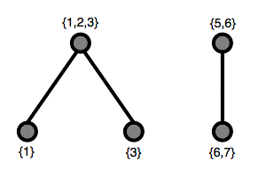

Let $P(n)$ be the set of the first $n$ positive integers $\{1, 2, \dots, n\}$.
Let $Q(n)$ be the set of all the non-empty subsets of $P(n)$.
Let $R(n)$ be the set of all the non-empty subsets of $Q(n)$.
An element $X \in R(n)$ is a non-empty subset of $Q(n)$, so it is itself a set.
From $X$ we can construct a graph as follows:
For example, $X = \{\{1\},\{1,2,3\},\{3\},\{5,6\},\{6,7\}\}$ results in the following graph:

This graph has two connected components.
Let $C(n, k)$ be the number of elements of $R(n)$ that have exactly $k$ connected components in their graph.
You are given $C(2, 1) = 6$, $C(3, 1) = 111$, $C(4, 2) = 486$, $C(100, 10) \bmod 1\,000\,000\,007 = 728209718$.
Find $C(10^4, 10) \bmod 1\,000\,000\,007$.
solve(n=10000, k=10) → ?solve(n=2, k=1) → ?solve(n=3, k=1) → ?solve(n=4, k=2) → ?solve(n=100, k=10) → ?